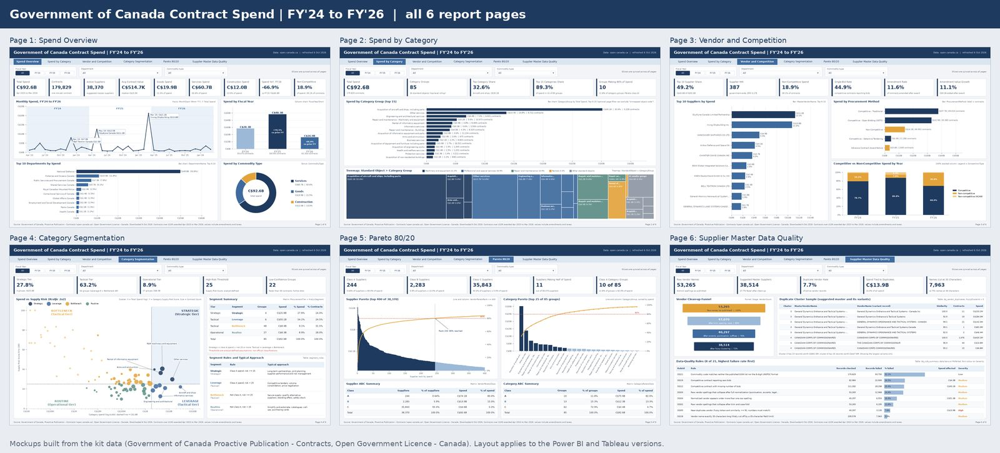

244 suppliers carry 80% of the money
244 of 38,370 suppliers (0.64%) account for 80.0% of spend, and just 11 suppliers make up half. Spend is far more concentrated than the usual 80/20.
Real Government of Canada contract data (C$92.6B across 179,829 contracts, FY'24 to FY'26), analysed for spend and for supplier master data quality, and designed as a six-page report for Power BI and Tableau.
Real public data, Open Government Licence - Canada
See the report pages Download the kit (about 3 MB)
Status: Mockups drawn from the real data in Python; Power BI and Tableau Public builds in progress.
My background is supplier master data. At Lafarge Africa (2018 to 2021) I looked after the supplier master file and its master data, and at IHS Towers I led SAP Discovery for Procurement. In both roles the same question kept coming up: how much of what a spend report says depends on how clean the supplier records are?
The Government of Canada publishes every contract over $10,000, with the vendor name typed in by each department. That makes it a good public test: the spend story and the master data story come from the same file. This project builds both, side by side, so the effect of messy supplier names on spend answers is visible in numbers.
Six pages, one design for both tools. Every number on them is computed from the real data. Select a page to open it full size.



All numbers are computed from the published data for contracts awarded April 2023 to March 2026, with values including amendments.
244 of 38,370 suppliers (0.64%) account for 80.0% of spend, and just 11 suppliers make up half. Spend is far more concentrated than the usual 80/20.
The suppliers that matter most are also the ones where duplicate records distort reporting. These are the records a master data team would fix first.
One category group, acquisition of aircraft and ships, is C$30.1B from 3,228 contracts. A handful of awards drive the headline numbers.
After segmentation, Strategic categories hold 27.8% of spend (4 groups), Tactical 63.2% (54 groups) and Operational 8.9% (27 groups).
Cleaning and fuzzy matching cut the vendor list by 27.7%. 3,135 records sit in 1,352 near-duplicate clusters holding C$13.9B, 15.0% of all spend.
7,963 vendor names are exactly 35 characters long, against 791 at 36. That points to a 35-character name field somewhere upstream. It is the same length as the standard SAP vendor name field, a pattern familiar from supplier master work, though it does not mean the government uses SAP.
52.1% of contracts (93,750) carry a commodity code that is neither a GSIN nor an 8-digit UNSPSC-style code, and 616 contracts (C$187.7M) use an object code that is not in the Chart of Accounts.
38.1% of contracts were non-competitive but only 18.9% of value. Of competitive contracts that reported bids, 44.9% had a single bid; 25.4% left the bid count blank and 26.5% reported zero bids.
A star schema: one fact row per contract, seven dimensions, and one snowflake link from category to segment.
Each of the 85 category groups gets a Supply Risk Score from 0 to 100: the average of supplier concentration (HHI / 10,000), non-competitive share of spend, single-bid share and supplier scarcity (10 divided by the number of active suppliers, capped at 1), times 100.
| Segment | Rule | Tier |
|---|---|---|
| Strategic | Pareto class A spend and risk 25 or more | Strategic |
| Leverage | Pareto class A spend and risk under 25 | Tactical |
| Bottleneck | Not class A and risk 25 or more | Tactical |
| Routine | Not class A and risk under 25 | Operational |
The thresholds are analyst-defined assumptions, not official classifications. Groups with fewer than 30 contracts (22 of 85) are flagged as low confidence.
Sort suppliers (or category groups) by spend, largest first, and look at the cumulative share of spend before each one.
The item that crosses 80% still counts as A, because the test uses the share before it.
Non-Competitive Spend % =
DIVIDE (
CALCULATE ( [Total Spend], DimProcurementMethod[IsCompetitive] = 0 ),
[Total Spend]
)Spend YoY % =
VAR CurrentYearSpend = [Total Spend]
VAR PriorYearSpend = [Spend PY]
RETURN
IF (
HASONEVALUE ( DimDate[FiscalYearShort] ) && NOT ISBLANK ( PriorYearSpend ),
DIVIDE ( CurrentYearSpend - PriorYearSpend, PriorYearSpend )
)Category Cumulative Spend % =
VAR CurrentSpend = [Total Spend]
VAR AllCategories =
ADDCOLUMNS ( ALLSELECTED ( DimCategorySegment[CategoryGroup] ), "@Spend", [Total Spend] )
VAR RunningSpend = SUMX ( FILTER ( AllCategories, [@Spend] >= CurrentSpend ), [@Spend] )
VAR TotalSpend = SUMX ( AllCategories, [@Spend] )
RETURN
IF ( NOT ISBLANK ( CurrentSpend ), DIVIDE ( RunningSpend, TotalSpend ) )Category Pareto Class =
VAR Cum = [Category Cumulative Spend %]
VAR Share =
DIVIDE ( [Total Spend], CALCULATE ( [Total Spend], ALLSELECTED ( DimCategorySegment[CategoryGroup] ) ) )
VAR ShareBefore = Cum - Share
RETURN
IF ( NOT ISBLANK ( Cum ), SWITCH ( TRUE (), ShareBefore < 0.80, "A", ShareBefore < 0.95, "B", "C" ) )// ABC Class (table calculation, compute using the category or supplier field)
IF RUNNING_SUM(SUM([Spend])) / TOTAL(SUM([Spend])) - SUM([Spend]) / TOTAL(SUM([Spend])) < 0.80 THEN "A"
ELSEIF RUNNING_SUM(SUM([Spend])) / TOTAL(SUM([Spend])) - SUM([Spend]) / TOTAL(SUM([Spend])) < 0.95 THEN "B"
ELSE "C"
ENDPower BI build guide, Tableau Public guide, 53 DAX measures with expected values, data model notes, the navy report theme, the Python scripts, the page mockups and the small dimension, segmentation and data-quality summary tables.
The large data files are left out to keep the download small. The full data regenerates from the open.canada.ca source with the included scripts (start with prepare_source.py; steps are in ABOUT_THIS_DOWNLOAD.txt).